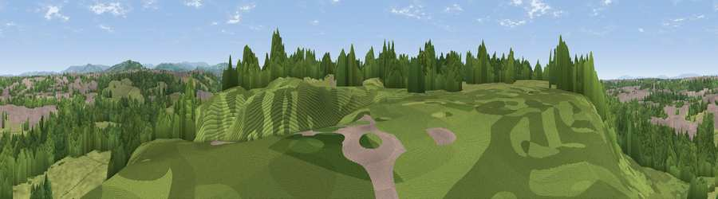

Viewpoint near Stockport
#31556 in England · top 67% of its area beats it · near StockportWhere it is
The exact computed spot (SJ 91375 90375). Click the marker for map links.
The view, rendered

A 360° render of this exact spot computed from the terrain model, tree cover and land cover — summer colours, afternoon light, calibrated against photographs of famous viewpoints. Real trees, hedges and buildings will differ in detail.
The panorama
Grey silhouette: terrain skyline in each direction (720 bearings, Earth curvature and refraction included). Dashed green: skyline with trees (+15 m) and buildings (+8 m) as obstacles. Blue strip: how far the ground is visible on each bearing.
Where the view opens
Wedge length = distance to the farthest visible ground on that bearing (vegetation-aware). Rings at 10, 25 and 50 km.
What fills the view
55% woodland · 32% grassland · 12% built-up ·
Angular shares of the visible panorama (visual magnitude), not map area. Landscape diversity 0.42 (0–1 Shannon).
Key numbers
More beautiful places nearby
The staircase of upgrades: each row has a higher view potential than everything closer. Driving times are estimates from straight-line distance, calibrated against real road routing — check an actual route before setting out.
| Place | Direction | Drive | Score |
|---|---|---|---|
| Viewpoint near Haughton Green | ENE · 3 km | ~7 min | 57.1 |
| Viewpoint near Haughton Green | ENE · 3 km | ~8 min | 64.0 |
| Viewpoint near Compstall | ENE · 4 km | ~9 min | 72.5 |
| Harrop Edge | NE · 9 km | ~18 min | 74.6 |
| Wild Bank | NE · 11 km | ~20 min | 76.2 |
| Viewpoint near Carrbrook | NE · 12 km | ~23 min | 77.1 |
| Viewpoint near Edenfield | NNW · 30 km | ~47 min | 77.5 |
| Viewpoint near Mow Cop | S · 33 km | ~51 min | 78.9 |
53.41012, -2.13121 · source: screening · position refined by local search. Computed location — check access rights before visiting.